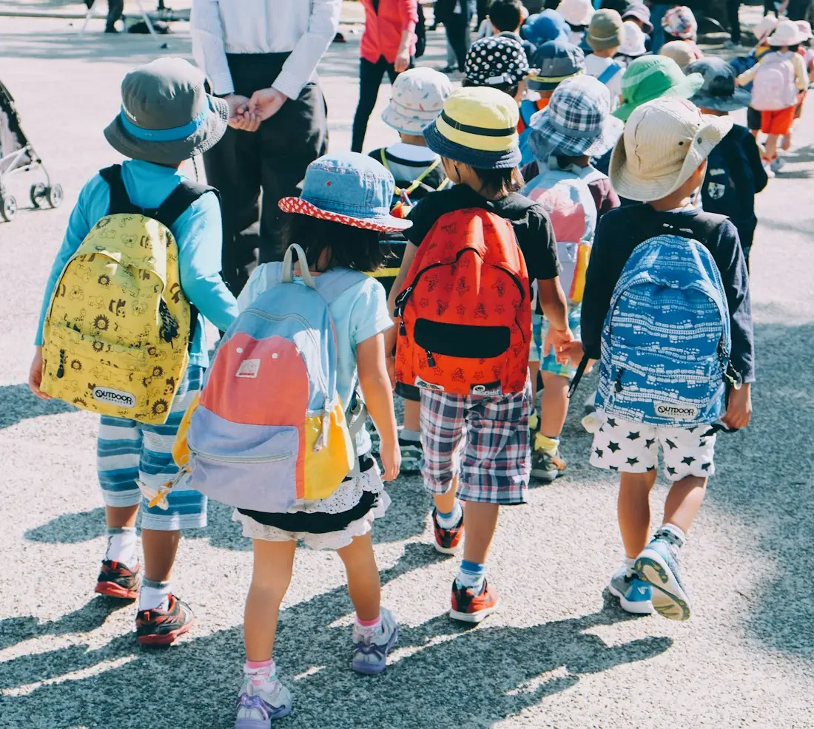
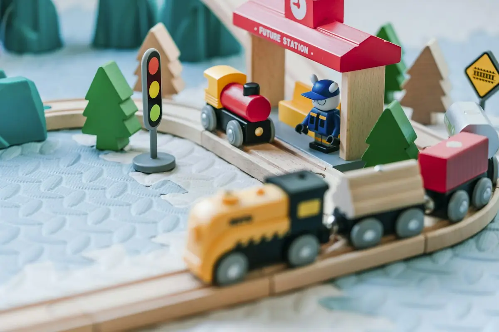
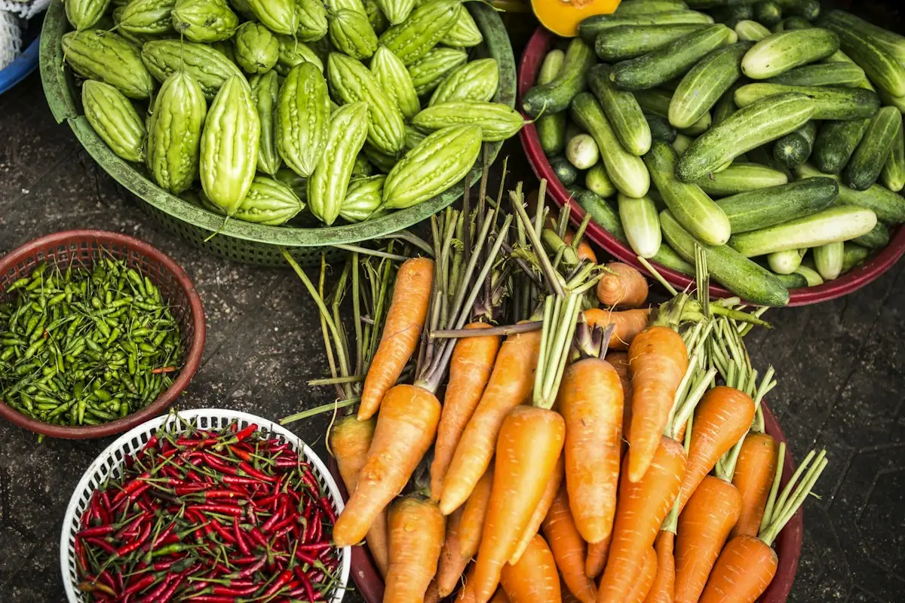

Giáo viên chủ nhiệm
- Được đào tạo về giáo dục mầm non
- Tìm hiểu phương pháp Montessori
- Quan sát, ghi chép sự phát triển của bé
Một khu vườn nhỏ cho những năm tháng đầu đời — nơi bé được là chính mình.
Little Garden bắt đầu từ một câu hỏi của chính những người làm cha mẹ: làm sao để con được lớn lên chậm rãi, được tự tay khám phá và không phải chạy theo những bài học quá sớm?
Câu trả lời chúng tôi chọn là một ngôi trường nhỏ, theo định hướng Montessori, nơi mỗi lớp học được chuẩn bị như một ngôi nhà và mỗi đứa trẻ được tin tưởng là người học chủ động.
Nội dung câu chuyện thương hiệu là văn bản mẫu — nhà trường cập nhật theo thông tin thực tế.
Ba niềm tin định hướng mọi hoạt động ở Little Garden.
Bé có sẵn mong muốn tìm hiểu thế giới. Người lớn tạo điều kiện, không làm thay.
Lớp học gọn gàng, đẹp và vừa tầm giúp bé tự lập và tập trung tự nhiên.
Bé được chọn việc mình làm, trong những quy tắc rõ ràng về sự tôn trọng bản thân, bạn bè và đồ vật.
Trong lớp và ngoài vườn — mỗi góc đều là một lời mời khám phá. Ảnh mang tính minh họa.



Giáo viên dành thời gian quan sát để hiểu bé đang quan tâm điều gì, rồi mới giới thiệu hoạt động phù hợp.
Kệ thấp, giáo cụ sắp xếp gọn gàng, mỗi thứ một chỗ để bé tự lấy, tự cất.
Không so sánh bé với bạn. Bé được làm lại một việc nhiều lần cho đến khi thành thạo.
Chia sẻ hằng ngày khi đón trả bé, gặp gỡ định kỳ để cùng nhìn lại hành trình của con.
Những người lớn bên cạnh bé mỗi ngày. Vai trò và tiêu chí dưới đây là thông tin minh họa.
Bấm vào ảnh để xem lớn hơn.
Cách tốt nhất để hiểu Little Garden là tận mắt nhìn các bé làm việc, chơi và ăn trưa cùng nhau. Đăng ký để nhà trường sắp xếp một buổi tham quan phù hợp.